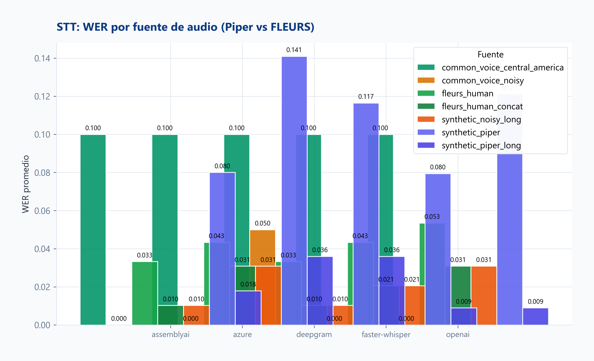
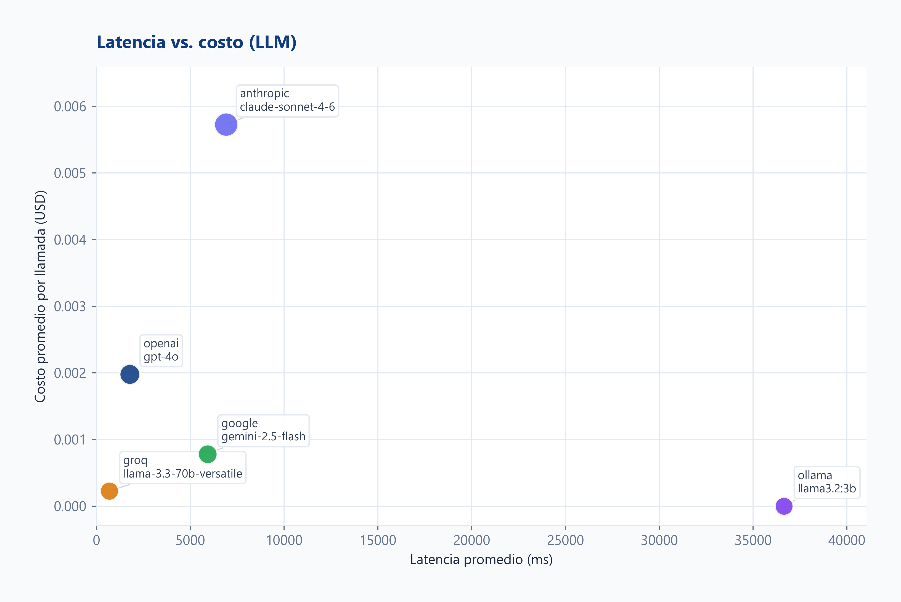
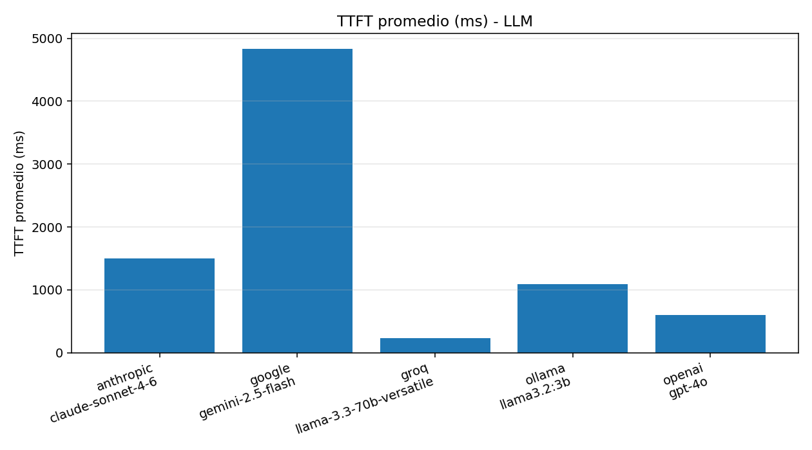
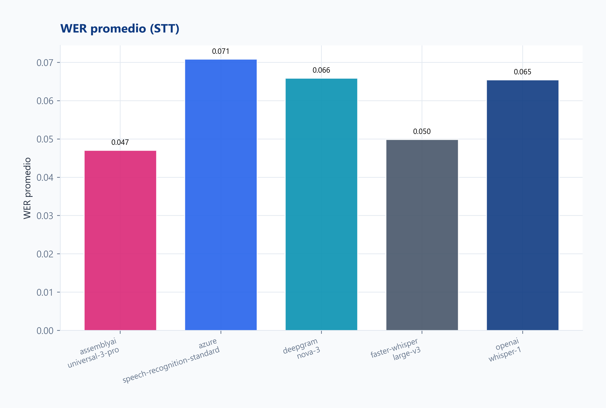
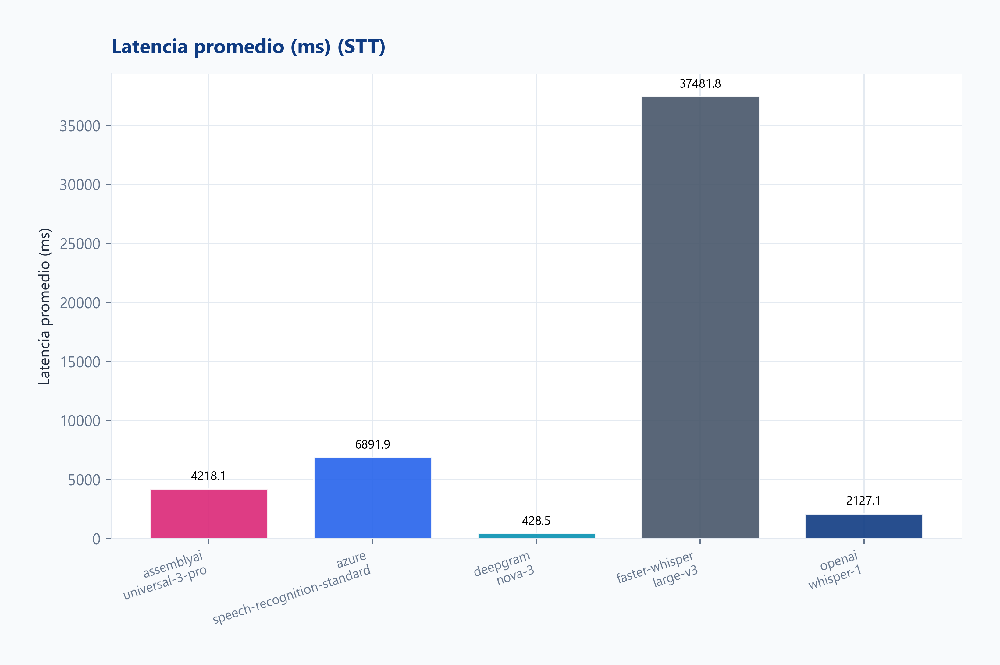
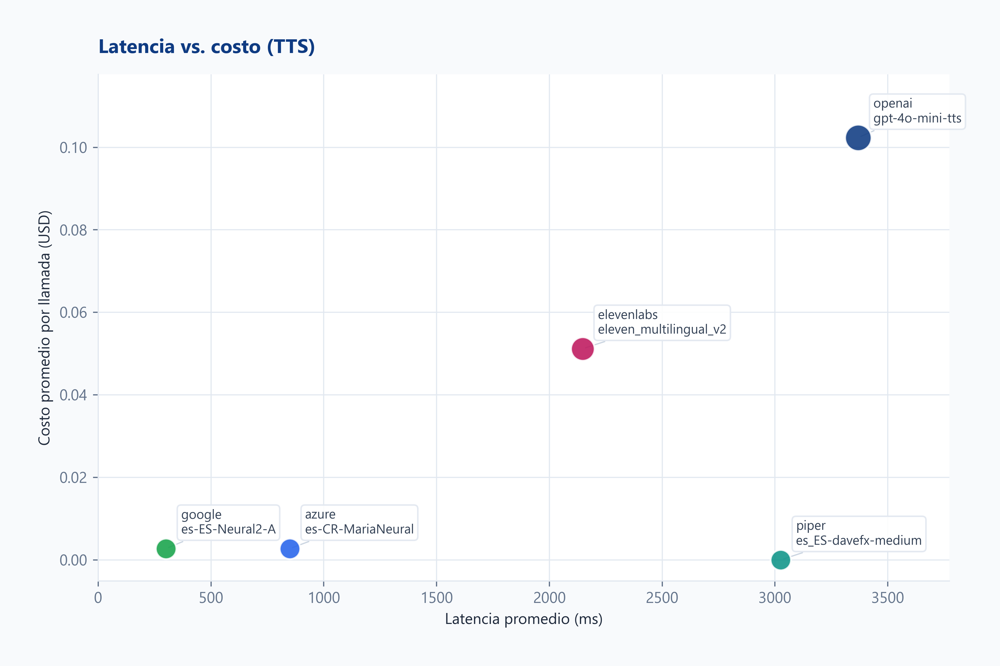
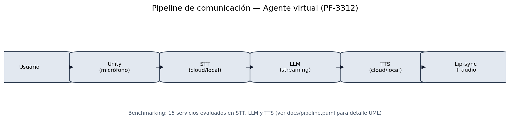

Autor: Ney Fred Jiménez Campos
Carné: B03230
Curso: PF-3312 Laboratorio de Agentes Virtuales
Inteligentes
Profesor: Dr. Alexander Barquero
Programa: Posgrado en Computación e Informática,
Universidad de Costa Rica — I Ciclo 2026
Entregable: Proyecto 2 · Benchmarking de Servicios de
IA
Repositorio Unity (Proyecto 1): pf3312_lab
Regenerar tras cada corrida:
python scripts/run_analysis.py
Exportar PDF:python scripts/export_pdf.py
Este proyecto mide de forma reproducible quince servicios cognitivos (cinco LLM, cinco STT y cinco TTS) que alimentan el pipeline conversacional del agente virtual desarrollado en el Proyecto 1 (captura de voz → transcripción → razonamiento → síntesis → lip-sync en Unity).
Objetivo general. Evaluar empíricamente esos servicios bajo seis dimensiones técnicas para fundamentar decisiones de arquitectura (nube vs. local, costo vs. calidad, latencia vs. privacidad).
Objetivos específicos.
lab_entregable_2.results/run_manifest.json + run_batch_id en
cada fila CSV.common/prompts.py).a1_saludo_corto–a5_acentos_cr) y cinco de voz
humana Google FLEURS es_419
(g1_fleurs–g5_fleurs, CC BY 4.0).t1–t5
en common/audio_samples.py).python -m run_all 5).time.perf_counter(); TTFT
en LLM con streaming.jiwer) frente a
transcripción de referencia; desglose Piper vs FLEURS.analysis/dimensions_catalog.py.claude-sonnet-4-6),
Google Gemini/Cloud TTS, Groq, Deepgram, AssemblyAI, Azure Speech,
ElevenLabs.python scripts/run_analysis.py (tablas,
gráficos, dimensiones, informe).| GPU | VRAM total (MB) | VRAM usada (MB) | Driver |
|---|---|---|---|
| Quadro P2000 | 4096 | 865 | 573.96 |
Energía (estimada): TDP referencia GPU ~75 W (Quadro P2000). En inferencia local sostenida (faster-whisper/Ollama) el consumo del sistema se acerca a carga GPU+CPU; no se midió wattímetro en esta corrida — valor indicativo para comparar nube ($/llamada) vs. estación de trabajo.
| componente | modelo |
|---|---|
| ollama | llama3.2:3b |
| faster_whisper | large-v3 int8_float16 |
| piper | es_ES-davefx-medium |
Costo API de modelos locales: $0. Trade-off: latencia mayor y consumo de VRAM/RAM en esta estación de trabajo.
| # | Dimensión | Medición |
|---|---|---|
| 1 | Latencia | CSV: latencia, TTFT (LLM), desv. estándar |
| 2 | Precisión | WER (STT); coherencia LLM; MOS TTS |
| 3 | Costo | USD/llamada; costo por turno pipeline |
| 4 | Privacidad | Catálogo 1–5 |
| 5 | Customización | Catálogo 1–5 |
| 6 | Integración | Catálogo 1–5 |
Corrida: 2026-06-08T05:47:46Z · runs/input: 5 ·
Python 3.13.13 ## Cobertura de dimensiones en este repo
| Dimensión | Fuente en el proyecto |
|---|---|
| 1 Latencia | results/*_results.csv (automático) |
| 2 Precisión | WER en STT (automático); LLM/TTS cualitativo |
| 3 Costo | CSV (estimado por rates en cada script) |
| 4 Privacidad | analysis/dimensions_catalog.py (1-5, revisar
políticas) |
| 5 Customización | catálogo 1-5 |
| 6 Integración | catálogo 1-5 |
| servicio | latencia_ms | ttft_ms | wer | costo_usd | privacidad_1_5 | customizacion_1_5 | integracion_1_5 | precision_resumen |
|---|---|---|---|---|---|---|---|---|
| llm/anthropic | 6979.3000 | 1497.1000 | nan | 0.0057 | 4 | 5 | 5 | Coherencia (cualitativo en informe) |
| llm/google | 5966.0000 | 4834.1000 | nan | 0.0007 | 3 | 4 | 4 | Coherencia (cualitativo en informe) |
| llm/groq | 675.2000 | 230.7000 | nan | 0.0002 | 4 | 3 | 4 | Coherencia (cualitativo en informe) |
| llm/ollama | 15400.6000 | 1087.1000 | nan | 0.0000 | 5 | 4 | 3 | Coherencia (cualitativo en informe) |
| llm/openai | 1918.4000 | 601.1000 | nan | 0.0021 | 3 | 5 | 5 | Coherencia (cualitativo en informe) |
| stt/assemblyai | 4135.7000 | nan | 0.0825 | 0.0006 | 3 | 4 | 4 | WER=0.0825 |
| stt/azure | 3003.1000 | nan | 0.1190 | 0.0026 | 3 | 4 | 4 | WER=0.119 |
| stt/deepgram | 307.3000 | nan | 0.0926 | 0.0007 | 3 | 4 | 4 | WER=0.0926 |
| stt/faster-whisper | 28126.8000 | nan | 0.0861 | 0.0000 | 5 | 3 | 3 | WER=0.0861 |
| stt/openai | 1970.8000 | nan | 0.1013 | 0.0009 | 3 | 3 | 5 | WER=0.1013 |
| tts/azure | 755.0000 | nan | nan | 0.0027 | 3 | 4 | 4 | MOS 1-5 (escucha tts_outputs/) |
| tts/elevenlabs | 2094.4000 | nan | nan | 0.0508 | 3 | 5 | 4 | MOS 1-5 (escucha tts_outputs/) |
| tts/google | 301.4000 | nan | nan | 0.0027 | 3 | 4 | 4 | MOS 1-5 (escucha tts_outputs/) |
| tts/openai | 2557.2000 | nan | nan | 0.1015 | 3 | 4 | 5 | MOS 1-5 (escucha tts_outputs/) |
| tts/piper | 1436.3000 | nan | nan | 0.0000 | 5 | 2 | 2 | MOS 1-5 (escucha tts_outputs/) |
| proveedor | latencia_ms | ttft_ms | wer | costo_usd | privacidad_1_5 | customizacion_1_5 | integracion_1_5 | precision_resumen |
|---|---|---|---|---|---|---|---|---|
| anthropic | 6979.3000 | 1497.1000 | nan | 0.0057 | 4 | 5 | 5 | Coherencia (cualitativo en informe) |
| 5966.0000 | 4834.1000 | nan | 0.0007 | 3 | 4 | 4 | Coherencia (cualitativo en informe) | |
| groq | 675.2000 | 230.7000 | nan | 0.0002 | 4 | 3 | 4 | Coherencia (cualitativo en informe) |
| ollama | 15400.6000 | 1087.1000 | nan | 0.0000 | 5 | 4 | 3 | Coherencia (cualitativo en informe) |
| openai | 1918.4000 | 601.1000 | nan | 0.0021 | 3 | 5 | 5 | Coherencia (cualitativo en informe) |
| proveedor | latencia_ms | ttft_ms | wer | costo_usd | privacidad_1_5 | customizacion_1_5 | integracion_1_5 | precision_resumen |
|---|---|---|---|---|---|---|---|---|
| assemblyai | 4135.7000 | nan | 0.0825 | 0.0006 | 3 | 4 | 4 | WER=0.0825 |
| azure | 3003.1000 | nan | 0.1190 | 0.0026 | 3 | 4 | 4 | WER=0.119 |
| deepgram | 307.3000 | nan | 0.0926 | 0.0007 | 3 | 4 | 4 | WER=0.0926 |
| faster-whisper | 28126.8000 | nan | 0.0861 | 0.0000 | 5 | 3 | 3 | WER=0.0861 |
| openai | 1970.8000 | nan | 0.1013 | 0.0009 | 3 | 3 | 5 | WER=0.1013 |
| proveedor | latencia_ms | ttft_ms | wer | costo_usd | privacidad_1_5 | customizacion_1_5 | integracion_1_5 | precision_resumen |
|---|---|---|---|---|---|---|---|---|
| azure | 755.0000 | nan | nan | 0.0027 | 3 | 4 | 4 | MOS 1-5 (escucha tts_outputs/) |
| elevenlabs | 2094.4000 | nan | nan | 0.0508 | 3 | 5 | 4 | MOS 1-5 (escucha tts_outputs/) |
| 301.4000 | nan | nan | 0.0027 | 3 | 4 | 4 | MOS 1-5 (escucha tts_outputs/) | |
| openai | 2557.2000 | nan | nan | 0.1015 | 3 | 4 | 5 | MOS 1-5 (escucha tts_outputs/) |
| piper | 1436.3000 | nan | nan | 0.0000 | 5 | 2 | 2 | MOS 1-5 (escucha tts_outputs/) |
| provider | audio_source | wer_prom | llamadas |
|---|---|---|---|
| assemblyai | fleurs_human | 0.0283 | 25 |
| assemblyai | synthetic_piper | 0.1368 | 25 |
| azure | fleurs_human | 0.0427 | 25 |
| azure | synthetic_piper | 0.1952 | 25 |
| deepgram | fleurs_human | 0.0283 | 25 |
| deepgram | synthetic_piper | 0.1568 | 25 |
| faster-whisper | fleurs_human | 0.0344 | 25 |
| faster-whisper | synthetic_piper | 0.1378 | 25 |
| openai | fleurs_human | 0.0405 | 25 |
| openai | synthetic_piper | 0.1621 | 25 |

Corrida: 2026-06-08T05:47:46Z · runs/input: 5 ·
Python 3.13.13
| provider | llamadas | json_valido | tasa_json |
|---|---|---|---|
| anthropic | 5 | 5 | 1 |
| 5 | 5 | 1 | |
| groq | 5 | 5 | 1 |
| ollama | 5 | 2 | 0.4 |
| openai | 5 | 3 | 0.6 |
Coherencia global en p1/p2/p4/p5:
data/llm_quality_notes.json.
| provider | coherencia_1_5 | instrucciones_1_5 | nota |
|---|---|---|---|
| openai | 5 | 4 | Respuestas claras en español; p2 razona por combinaciones; p3 JSON con clave agentes; p4 resume las 6 dimensiones; p5 cumple rol Max con calentamiento. Población AMCR varía entre corridas. |
| anthropic | 5 | 3 | Contenido sólido pero añade markdown/emojis en p1–p5 cuando se pidió texto plano o JSON exclusivo; p3 sí entrega JSON válido. Excelente estructura en p2. |
| 4 | 4 | Buen español y resúmenes útiles; p3 JSON 100% válido en corrida 2026-06-08; p4 condensa bien el texto largo. | |
| groq | 4 | 3 | Rápido y coherente; p4 muy breve (cubre 3 bloques pero poco detalle); p3 a veces devuelve array sin envoltorio agentes; p5 ofrece rutina de calentamiento. |
| ollama | 3 | 3 | Llama 3.2 3B local: p1 excede una oración; p3 JSON válido pero con personajes fuera de contexto (Batman/Sonic); p2 y p4 razonables para tamaño del modelo. |
| provider | mos_inteligibilidad | mos_naturalidad | wer_promedio | nota |
|---|---|---|---|---|
| azure | 4 | 4 | 0.08 | Voz es-CR clara; t1 con WER alto por saludo informal transcrito distinto. |
| elevenlabs | 4 | 5 | 0.0741 | Mejor naturalidad esperada; WER casi cero en t2/t3. |
| 3 | 4 | 0.1211 | Ligera pérdida en t2; neural estable en párrafo largo. | |
| openai | 4 | 4 | 0.0921 | Buena inteligibilidad en textos medios/largos. |
| piper | 4 | 3 | 0.0902 | Local gratuito; timbre más sintético que nube. |
Promedio de costo/latencia por llamada en la última corrida filtrada.
| escenario | llm | stt | tts | costo_usd_turno | latencia_ms_turno |
|---|---|---|---|---|---|
| Demo rápida nube | groq | deepgram | 0.0036 | 1283.9 | |
| Calidad premium | openai | assemblyai | elevenlabs | 0.053406 | 8148.5 |
| Privacidad offline | ollama | faster-whisper | piper | 0 | 44963.6 |
| Stack Azure | openai | azure | azure | 0.00741 | 5676.5 |
Corrida: 2026-06-08T05:47:46Z · runs/input: 5 ·
Python 3.13.13
| provider | model | deployment | llamadas | latencia_ms_prom | latencia_ms_std | latencia_ms_p95 | ttft_ms_prom | costo_usd_prom | categoria |
|---|---|---|---|---|---|---|---|---|---|
| anthropic | claude-sonnet-4-6 | cloud | 25 | 6979.31 | 4672.96 | 14756.4 | 1497.13 | 0.005716 | llm |
| gemini-2.5-flash | cloud | 25 | 5966.03 | 4251.84 | 12148.9 | 4834.07 | 0.000748 | llm | |
| groq | llama-3.3-70b-versatile | cloud | 25 | 675.16 | 380.8 | 1399.7 | 230.73 | 0.000218 | llm |
| ollama | llama3.2:3b | local | 25 | 15400.6 | 12408.9 | 37157 | 1087.1 | 0 | llm |
| openai | gpt-4o | cloud | 25 | 1918.41 | 1440.69 | 4816.11 | 601.13 | 0.002081 | llm |


Hallazgos. Groq lidera latencia y costo; OpenAI
equilibra velocidad y calidad; Anthropic
(claude-sonnet-4-6) aporta flexibilidad a mayor costo;
Gemini con TTFT elevado; Ollama local sin costo API pero latencia alta.
Ver §3.0.4 para JSON p3 y notas cualitativas.
Corrida: 2026-06-08T05:47:46Z · runs/input: 5 ·
Python 3.13.13
| provider | model | deployment | llamadas | latencia_ms_prom | latencia_ms_std | latencia_ms_p95 | costo_usd_prom | calidad_prom | categoria |
|---|---|---|---|---|---|---|---|---|---|
| assemblyai | universal-3-pro | cloud | 50 | 4135.69 | 834.45 | 6669.46 | 0.000565 | 0.08 | stt |
| azure | speech-recognition-standard | cloud | 50 | 3003.11 | 1666.2 | 5829.81 | 0.002622 | 0.12 | stt |
| deepgram | nova-3 | cloud | 50 | 307.33 | 182.28 | 691.94 | 0.000675 | 0.09 | stt |
| faster-whisper | large-v3 | local | 50 | 28126.8 | 5684.84 | 37294.8 | 0 | 0.09 | stt |
| openai | whisper-1 | cloud | 50 | 1970.79 | 715.71 | 3319.25 | 0.000942 | 0.1 | stt |


Hallazgos. Deepgram es el más rápido en nube; WER mejora con voz FLEURS (~0.03) frente a Piper sintético (~0.14–0.19). faster-whisper local alcanza WER competitivo sin costo API a cambio de latencia muy alta. Detalle por fuente en §3.0.3.
Corrida: 2026-06-08T05:47:46Z · runs/input: 5 ·
Python 3.13.13
| provider | model | deployment | llamadas | latencia_ms_prom | latencia_ms_std | latencia_ms_p95 | costo_usd_prom | categoria |
|---|---|---|---|---|---|---|---|---|
| azure | es-CR-MariaNeural | cloud | 25 | 754.99 | 245.7 | 927.32 | 0.002707 | tts |
| elevenlabs | eleven_multilingual_v2 | cloud | 25 | 2094.38 | 1319.89 | 4671.55 | 0.05076 | tts |
| es-ES-Neural2-A | cloud | 25 | 301.38 | 201.68 | 717.94 | 0.002707 | tts | |
| openai | gpt-4o-mini-tts | cloud | 25 | 2557.19 | 1041.41 | 4455.28 | 0.10152 | tts |
| piper | es_ES-davefx-medium | local | 25 | 1436.26 | 683.72 | 2754.97 | 0 | tts |

Hallazgos. Google TTS lidera latencia con costo bajo; Piper gratuito local; ElevenLabs/OpenAI TTS más costosos. MOS en §3.0.5.

Diagrama UML detallado: docs/pipeline.puml.
Flujo: micrófono Unity → STT → LLM (streaming) → TTS → reproducción + lip-sync.
Con 15/15 servicios medidos en la corrida filtrada
(run_batch_id en manifiesto):
| Escenario | Pipeline | Por qué |
|---|---|---|
| Demo rápida nube | Groq + Deepgram + Google TTS | Latencia y costo bajos (§3.0.6) |
| Calidad premium | OpenAI/Anthropic + AssemblyAI + ElevenLabs | WER/STT y voz premium |
| Privacidad offline | Ollama + faster-whisper + Piper | Sin terceros; VRAM/RAM en §2.5 |
| Stack Azure | Azure STT + TTS (es-CR) |
Una key, integración .NET |
Conclusión. No hay ganador único: la elección depende del caso de uso del agente (Proyecto 1). Los datos empíricos de esta corrida sustentan las combinaciones anteriores.
| Carpeta | Contenido |
|---|---|
docs/tablas_generadas/ |
Resumen LLM, STT, TTS, costo pipeline |
docs/graficos_generados/ |
Latencia, costo, heatmaps, pipeline PNG |
docs/dimensiones_generadas/ |
Seis dimensiones + matrices |
results/ |
CSV, raw JSON, manifiesto, hardware |